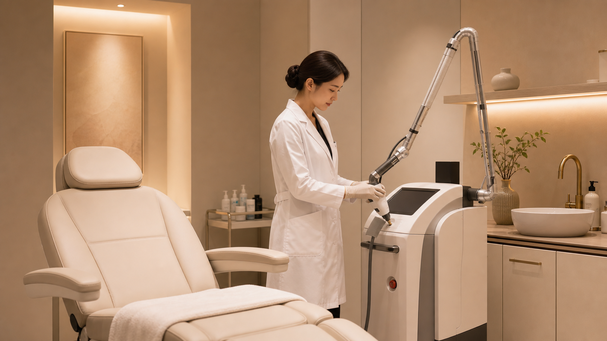
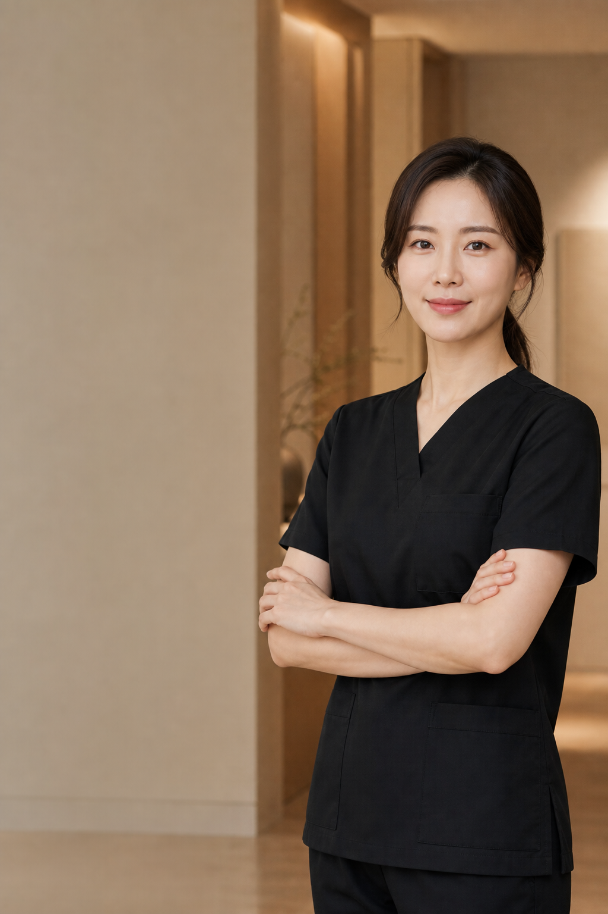
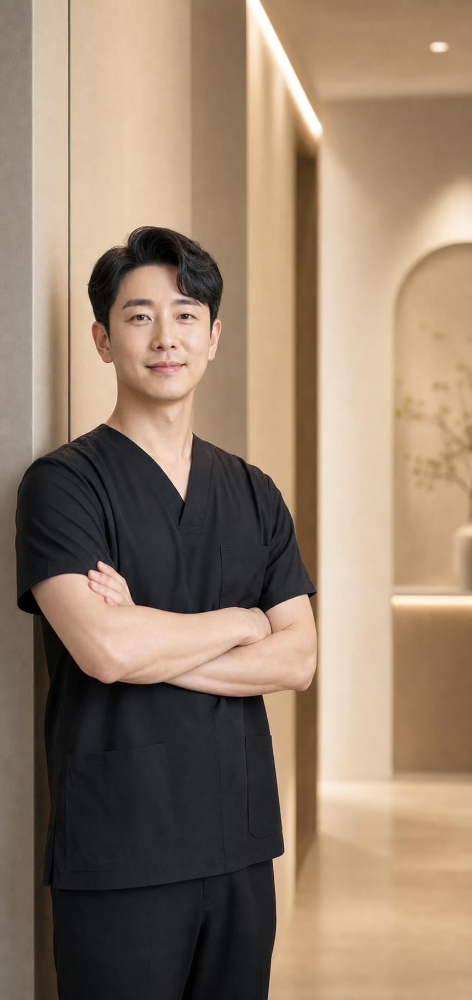

이미지 디자인 리포트
상담 후 개인별 얼굴 밸런스 체크리스트 제공
상담 후 개인별 얼굴 밸런스 체크리스트 제공
피부 컨디션과 일정에 맞춘 단계별 플랜 안내
프라이빗 상담실에서 여유롭게 진행됩니다

루미에르는 한 가지 유행의 얼굴을 만들기보다, 개인의 이목구비와 표정, 회복 일정까지 함께 고려한 자연스러운 디자인을 지향합니다.
무리한 권유보다 가능한 범위와 회복 과정을 먼저 설명합니다.
사진 한 장이 아닌 얼굴의 입체 구조와 표정선을 기준으로 봅니다.
상담, 시술, 경과 체크까지 프라이빗하게 이어지는 동선을 설계합니다.

자연스러운 인상 변화와 비율 중심 상담을 지향하는 얼굴라인 디자인 전문의 컨셉입니다.

피부 컨디션과 회복 기간을 함께 고려해 단계별 안티에이징 케어를 제안하는 의료진 컨셉입니다.
턱선, 광대, 볼륨, 표정선을 함께 고려해 자연스러운 인상 변화를 설계합니다.
쌍꺼풀의 높이보다 눈뜨는 힘과 눈꼬리, 얼굴 전체 비율을 먼저 확인합니다.
정면과 측면에서 모두 어색하지 않은 라인을 목표로 하는 상담형 섹션입니다.
회복 기간과 원하는 변화의 강도에 맞춰 단계별 리프팅 플랜을 제안합니다.
피부결, 색소, 탄력 컨디션에 맞춘 비수술 케어 프로그램을 구성합니다.
원하는 변화와 회복 가능 기간, 기존 시술 이력을 체크합니다.
얼굴 비율과 피부 상태를 기준으로 가능한 플랜을 비교합니다.
예약 동선과 대기 시간을 줄인 프라이빗 케어 흐름을 제공합니다.
회복 단계에 맞춰 관리 포인트와 내원 일정을 안내합니다.